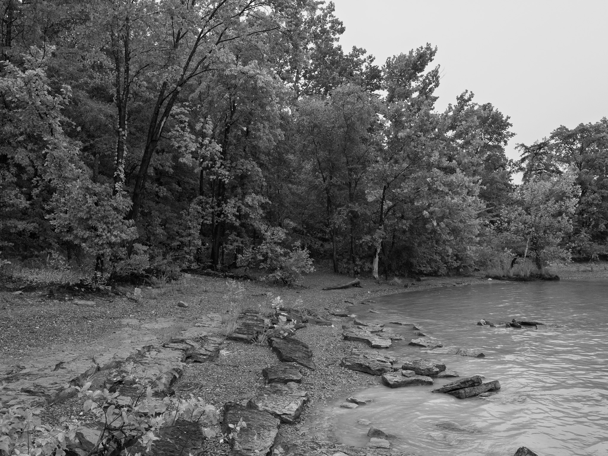
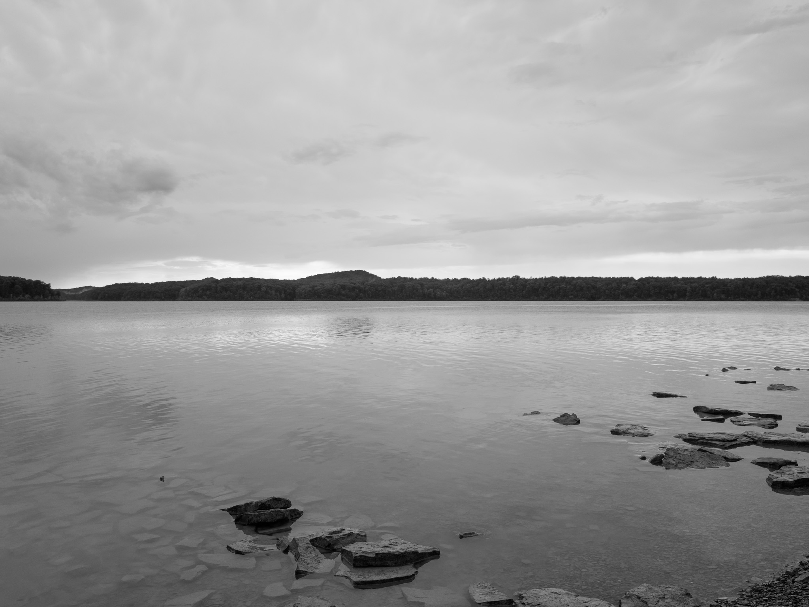
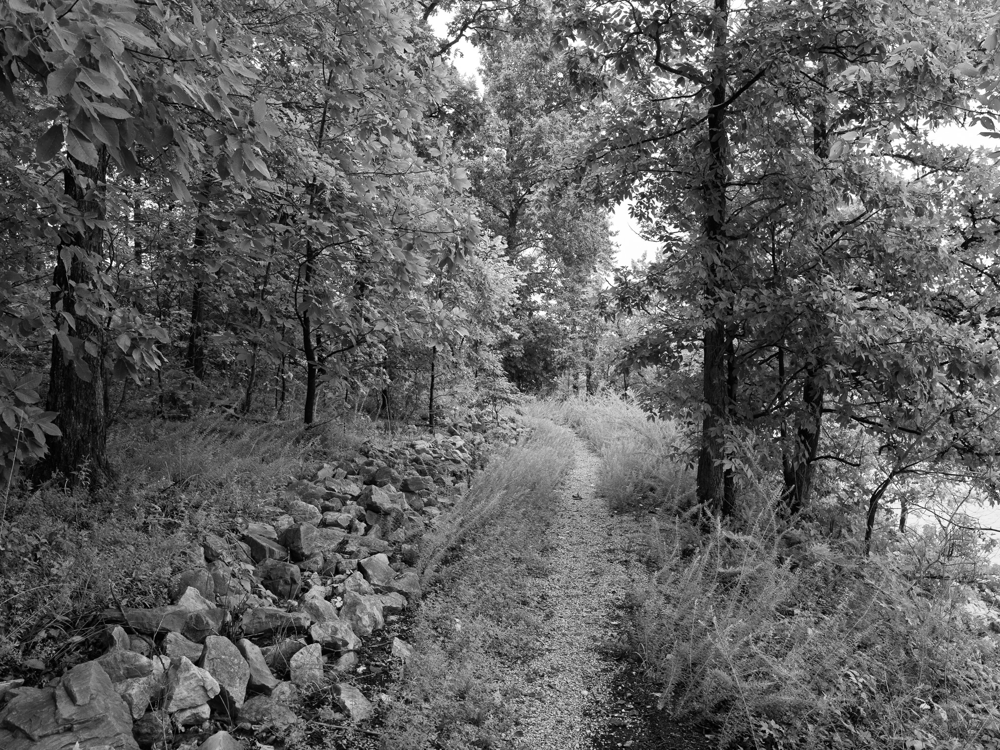
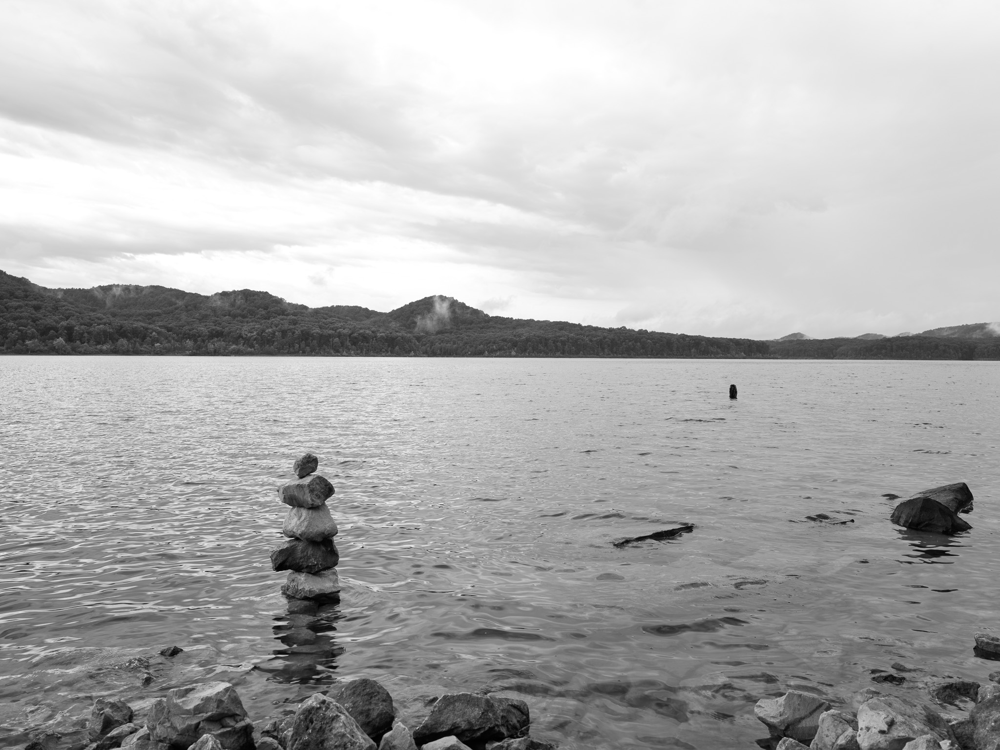
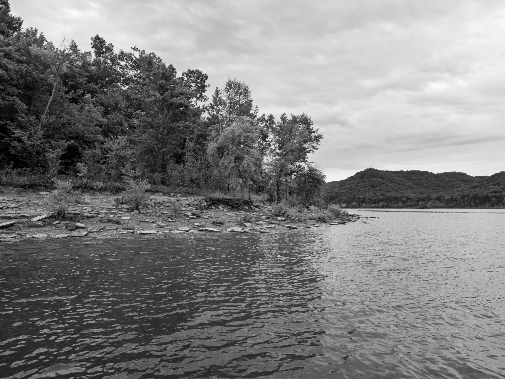
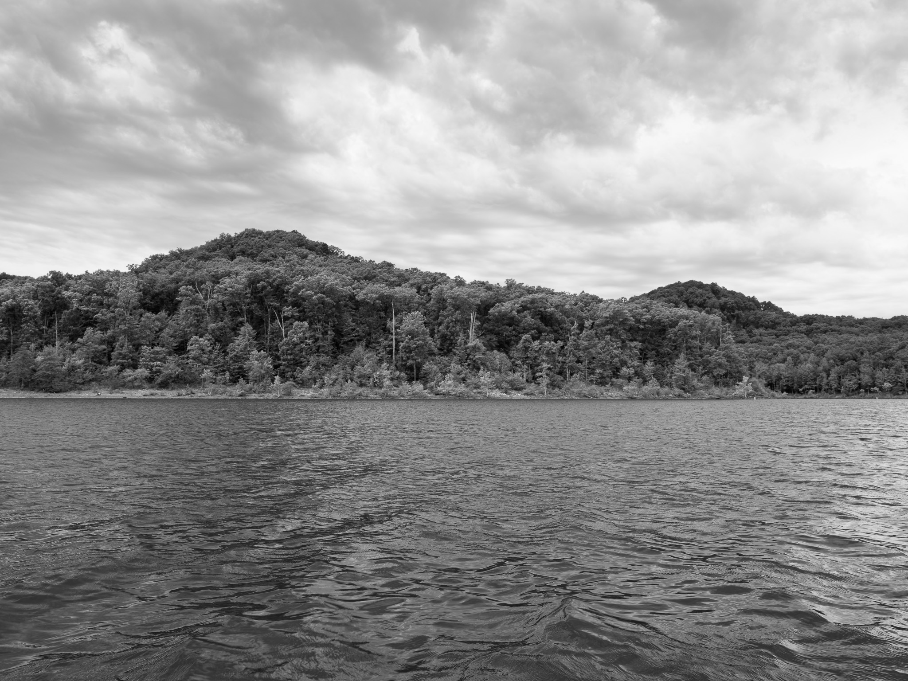

An 8,270-acre Army Corps of Engineers reservoir in the Daniel Boone National Forest west of Morehead, begun in 1965 and filled by 1974.






These photographs are in the public domain (CC0 1.0). No permission is required. No credit is required.
Optional credit line: Public Lands Institute, publiclandsinstitute.net/sites/cave-run-lake.html
To tell PLI where an image was used, write to contact@publiclandsinstitute.net.